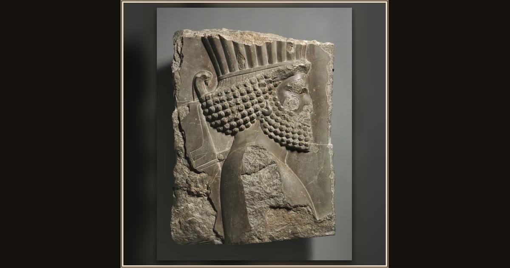

Fragment of a Wall Decoration from the Palace of Xerxes: "Guardsman" in Procession
Persia, Persepolis, Achaemenid period · 486–465 BCE · cma
A bearded guardsman in a fluted headdress, carved in procession for the palace of Xerxes at Persepolis, the kind of Persian soldier the elders picture marching out from Susa (15). Explore its place in Aeschylus's Plays, Persians, line 15.